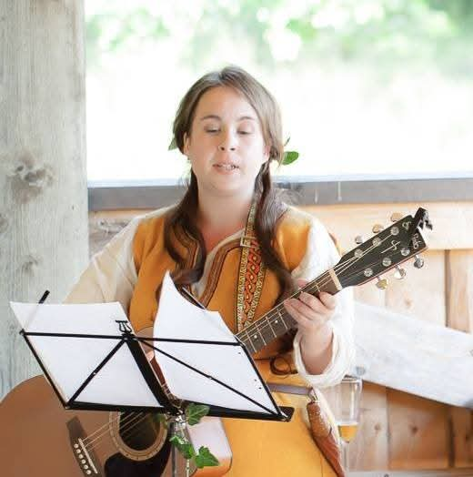
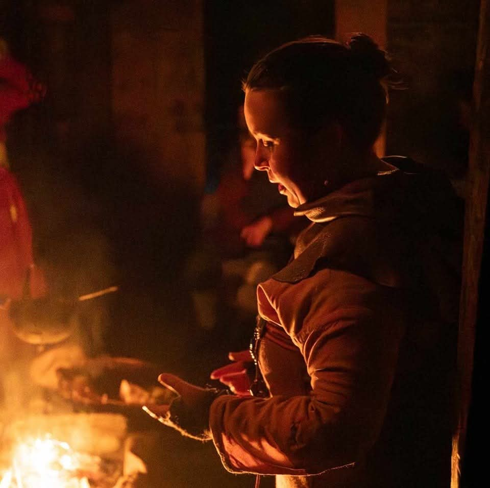

MLI (Emelie Blomgren) har viet sin musikalske karriere til at bringe den historiske musik til live. Gennem samarbejde med nogle af Nordens dygtigste musikere genskaber hun klange fra en forgangen tid — med en energi og sjæl der rammer publikum direkte i hjertet.
GINNUNGAGAP
GINNUNGAGAP er et historisk musikensemble dannet i 2022, der specialiserer sig i nordisk vikingemusik og norrøn klang. Trioen skaber en rå og energisk lydverden inspireret af oldnordiske sagaer, norrøn mystik og fælles historiske rødder.
Med Emelies kraftfulde stemme og forståelse for den skaldiske tradition bringes historien til live. Ensemblet optræder jævnligt på vikingemarkeder, museer og historiske festivaler i hele Skandinavien — og tilbyder også en «skjaldeskole» for børn, hvor deltagerne kan lære at skabe deres egne episke vikingsange.
VISEKÆLLINGEN
Som VISEKÆLLINGEN udforsker Emelie grænselandet mellem den historiske ballade og den levende visetradition. Med guitar og stemme fortolker hun viser og ballader fra hele det nordiske område — fra middelalderens folkeviser til nyere tiders sange, altid med en dyb respekt for stoffets rødder og en personlig, nærværende formidling.
VISEKÆLLINGEN optræder solo og i samspil med andre musikere, og skaber intime musikalske oplevelser der sætter publikum i forbindelse med den nordiske sangtradition.
Den Danske Bellmanskvartetten
Den Danske Bellmanskvartetten hylder arven efter Carl Michael Bellman — den svenske nationaldigter og troubadour fra 1700-tallet. Kvartetten bringer Bellmans tidløse sange til live med autentisk musikalsk fortolkning og scenisk formidling.
I samarbejde med Tine Skau og Kai Stensgaard skaber Emelie et musikalsk univers der forener det svenske og det danske, og viser hvordan Bellmans kunst stadig har relevans og berøringsflade i dag.


